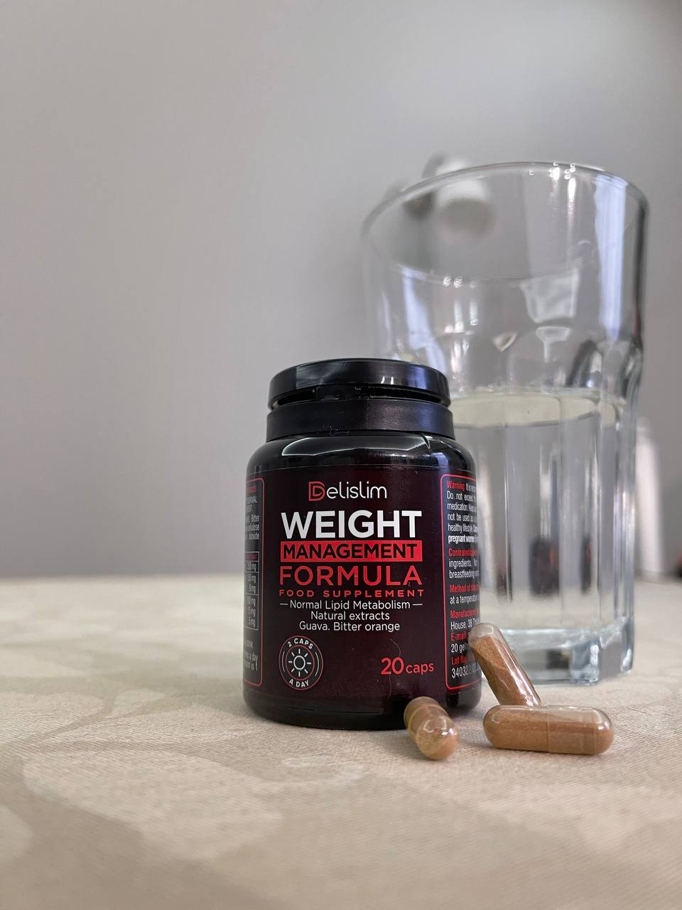

SCHIMBAREA VIEȚII: o studentă la medicină a inventat un produs unic care va ajuta să slăbiți 25 de kilograme în 28 de zile
Simion Tudoranu nu vrea să știți despre asta
- SĂNĂTATE
- SUPLIMENT ALIMENTAR
- VITAMINE
- DIETA
- PIERDERE ÎN GREUTATE


Oare aceasta nu este înainte și după?
Aceasta este Catalina Neamțu, cea mai bună studentă la medicină de la Universitatea din capitală.
În 30 de zile a reușit să slăbească 25 kg! Nu sunt necesare nici o dietă sau exerciții fizice.
Specialitatea ei - tehnologia alimentară. Și în experimentele sale pe teza de doctorat, a dat peste o nouă metodă de blocare a grăsimilor de care nimeni nu auzise până acum.
Pentru a se asigura că nu a fost un accident, ea a rugat-o pe mătușa ei Margareta Strat să o încerce:
Magdalena Strat a dat jos 15 kg într-o lună.
Vecina Catalinei Neamțu, Lucia Adamache din orașul natal, de asemenea, a încercat această nouă metodă de blocare a grăsimilor:
Lucia Adamache a dat jos 34 kg în 2 luni.
Iar unul dintre participanții la cercetarea ei de disertație, Teodor Brumaru, a văzut rezultate remarcabile:
Teodor Brumaru a slăbit mai mult de 59 kg în mai puțin de 3 luni cu ajutorul Catalinei Neamțu.
Chiar și Catalina Neamțu și colegii săi au fost uimiți.

În ciuda scepticismului lor, ea și-a apărat disertația pe scenă și a declarat:
"Pot convinge pe oricine să vadă rezultate similare. Dacă luptați cu greutatea ta ... De asemenea, puteți pierde 25 kg în 30 de zile. Fără dietă și exerciții fizice. Datorită acestui instrument unic."
Toți a fost uimiți. Oamenii înnebuneau.
Toată lumea discutau totul între ei. Totul părea neadevărat pentru ei.
Dar Catalina Neamțu a vrut să le dovedească că ei greșesc.
Ea a vrut să arate oamenilor că acest instrument există cu adevărat. Și aceasta este cheia pentru prevenirea creșterii în greutate.
Cheia pentru a pierde 25 kg în 30 de zile.
Oare nu ați dori să slăbiți atât de repede?
Nu vă faceți griji. Veți vedea aceste rezultate foarte curând.
Dar, înainte de a vă arăta cum să o faceți, să vorbim despre modul în care Catalina Neamțu a făcut posibil.
Cum a făcut Catalina Neamțu această descoperire
Catalina Neamțu a descoperit această soluție revoluționară pentru pierderea în greutate în al 2-lea an. de studii la Universitate.
Din cauza tuturor lecțiilor și studiilor, alimentația sănătoasă și exercițiile fizice au fost ultimul lucru în mintea ei.
De aceea, în primul an de antrenament a câștigat mai mult de 25 kg.
Și ei, ca specialistului în nutriție, îi era rușine. Mai mult, că misiunea ei - de a ajuta alte persoane să rămână sănătoase!
Dar prioritatea ei în acest moment a fost să studieze din greu și să obțină note mari pentru a obține stagiul perfect.
Într-o seară târziu, în timp ce studia în bibliotecă, Catalina Neamțu căuta o anumită carte pentru cercetarea ei.
În procesul de căutare, ea a dat peste această zonă de cărți. Mai târziu, ea a aflat că aceasta este o secțiune închisă.
A ales această carte, care era similară cu ceea de care avea nevoie.
Când a răsfoit paginile, a înțeles că nu era cartea potrivită. Cu toate acestea, ea a dat peste acest capitol numit "Metoda de blocare a grăsimilor".
E imposibil! se gândea.
Cu toate acestea, ea a continuat să citească și să citească.
Apoi s-a uitat în sus și a observat că era într-adevăr o zonă închisă.
Dar această informație a fost prea bună. Așa că a luat o mulțime de note și s-a strecurat pentru a fotocopia toate paginile cele mai prețioase de informații.
Ea a continuat să se gândească la misiunea ei - de a ajuta oamenii să rămână sănătoși și să piardă în greutate.
Cu toate acestea, în toaleta bibliotecii, a aruncat o privire rapidă asupra oglinzii. Și și-a dat seama că trebuie să-și rezolve problemele de greutate înainte de a-i putea ajuta pe ceilalți.
Privind înapoi la notele ei, Catalina Neamțu știa că trebuie să facă ceva în acest sens.
Noua metodă de blocare a grăsimilor
Trebuia să aplice această nouă metodă de blocare a grăsimilor.
Din fericire, a avut acces la un laborator de nutriție care i-a permis să experimenteze această metodă.
Metoda de blocare a grăsimilor a fost destul de simplă, așa că laboratorul avea toate ingredientele necesare.
După luni de sânge, sudoare, lacrimi... încercare și eroare ...
...Catalina Neamțu a reușit să colecteze combinația perfectă de ingrediente.
Toate acestea au fost necesare pentru a încerca această metodă de blocare a grăsimilor.
Catalina Neamțu și-a verificat toate studiile. Și în 7 zile a pierdut deja 8 kg.
Apoi, după 14 zile, a scăzut încă 7 kg.
După 21 de zile, a slăbit încă 5 kg.
Și în cele din urmă, după 30 de zile, Catalina Neamțu a dat jos încă 4 kg.
În doar 30 de zile, tocmai 25 kg!
Acum probabil te întrebi...
... Care este esența acestei metode de blocare a grăsimilor?
Blochează orice set de grăsimi.
Și acesta este motivul pentru care mulți oameni ca tine se luptă să piardă în greutate. Chiar și după toate dietele și antrenamentele.
Singura carte pe care Catalina Neamțu a găsit-o în biblioteca Universității sale explică modul în care funcționează noua metodă de blocare a grăsimilor.
De fapt, leptina - hormonul corpului tău care ajută la reglarea poftei de mâncare.
Acest hormon trimite un semnal creierului tău pentru a nu mai mânca atunci când corpul tău este sătul de alimente.
Cu toate acestea, din cauza "rezistenței la leptină", acest semnal nu ajunge la creier.
Acest lucru te face să mănânci mai mult, chiar dacă corpul tău are suficientă mâncare.
O nouă metodă de blocare a grăsimilor combate rezistența la leptină.
Apoi, creierul tău primește semnale că ești sătul. În plus, declanșează semnalele care accelerează metabolismul.
În sursele din această secțiune a cărții se discută despre experimentele anilor 1980. Și o persoană care a urmat noua metodă de blocare a grăsimilor a reușit să slăbească 20 kg în 32 de zile.
Deci, puteți bloca și setul de grăsimi și puteți pierde multă greutate într-o lună.
Dar…
... Ce trebuie să faceți dacă aveți un metabolism lent sau ați luptat cu creșterea în greutate toată viața?
Nu vă faceți griji.
Chiar dacă aveți un metabolism lent. Chiar dacă ați încercat să slăbiți toată viața. Sau chiar dacă doriți doar să pierdeți multă grăsime înainte de viitoarea nuntă sau alt eveniment important.
Noua metodă de blocare a grăsimilor poate face față cu ușurință acest lucru.
Să-l luam, de exemplu, pe Andrii Tudoran în vârstă de 62 de ani.
A fost acela care a luptat cu un metabolism lent toată viața. Se îngrașă ușor.
Cu toate acestea, când a încercat această nouă metodă de blocare a grăsimilor, metabolismul său a devenit foarte rapid. Acum poate mânca aproape orice vrea.
Și, în același timp, să rămână în formă!
Priviți cum greutatea lui Andrii Tudoran a scăzut de la 102 kg la 82 kg într-o lună:
Mai este și Daniela Moșu, de 58 de ani, care a vrut să slăbească pentru nunta fiicei sale.
Deși a început să urmeze noua metodă de blocare a grăsimilor cu doar 5 săptămâni înainte de nuntă, a reușit să pună o rochie de câteva dimensiuni mai mică!
Ea a povestit cum Teodora Rărvan a reușit de la 80 kg să ajungă la 58 kg în timp record:
Și mai este, de asemenea, Alin Rusu de 49 de ani, care a fost supraponderal pentru cea mai mare parte a vieții sale. De asemenea, a avut un metabolism lent.
După ce a urmat noua metodă de blocare a grăsimilor, a reușit să-și pună hainele vechi după 20 de ani.
Haideți să vorbim despre transformare!
Imaginați-vă că puteți găsi un costum sau o rochie pe care nu ați purtat-o de ani de zile. Sau cum este să arăți subțire și să te încadrezi în toate fotografiile tale noi.
Noua metodă de blocare a grăsimilor poate face ca toate visele tale de slăbit să devină realitate.
Și nu vă faceți griji ...
Problemele de greutate - nu sunt vina ta
Catalina Neamțu știe ce înseamnă să lupți cu greutatea.
Fiind studentă al facultății specializate în nutriție, știe că nu este vina ei.
Și nu e nici vina ta.
Când a scufundat în cercetări, a descoperit știri șocante.
Există absolvenți bogați care fac parte din cercul interior al Siam Bioscience. Și ei finanțează majoritatea cercetărilor și experimentelor pe care le desfășoară profesorii din capitală.
Moștenirea și mijloacele de trai ale profesorilor depind de finanțarea Siam Bioscience.
Și ghiciți ce?
Aceștia sunt anume acei profesorii care erau sceptici față de afirmațiile ei.
Ei chiar au fost pe această fotografie împreună cu absolvenți, despre care se știe că sunt jucătorii cheie în Siam Bioscience.
Catalina Neamțu chiar a întrebat de profesorul ei despre această uriașă donație pentru experiment. Aceasta fost în domeniul nutriției.
Cu toate acestea, ea s-a întrebat întotdeauna de ce profesorul ei a insistat asupra mijloacelor potențial periculoase și costisitoare.
În loc de o soluție sigură, mai ieftină și mai eficientă pentru pierderea naturală în greutate.
Datorită muncii și riscului Catalinei Neamțu, acum puteți simți beneficiile noii metode de blocare a grăsimilor.
Sunteți primul public care a auzit această veste minunată.
Și Catalina Neamțu chiar afirmă că...
Aceasta este ultima soluție dietetică de care veți avea nevoie vreodată
Nu veți avea nevoie de alte suplimente de pierdere în greutate, diete sau plan de exerciții.
De ce?
Când Catalina Neamțu a aflat despre această nouă metodă de blocare a grăsimii, a trebuit să dezvolte o modalitate de a permite oamenilor să o implementeze în sistemul lor.
Cercetările ei au condus-o la descoperirea unui produs.
Produsul face ca Noua metodă de blocare a grăsimilor să fie disponibilă publicului larg.
Și vă poate ajuta să pierdeți 25 kg în 30 de zile!
Spre deosebire de cele mai multe mijloace de pierdere în greutate, acest produs contribuie la pierderea în greutate mai consistentă.
Pe termen lung.
% PARTICIPANȚII LA TESTARE
- - Oamenii tradiționali, care stau pe diete
- - Testere a produsului nou
| 13% |
| 97% |
Nu veți obține doar rezultate pe termen scurt.
Și dacă vă este interesat ...
... nu vedeți acest remediu în magazine, deoarece Catalina Neamțu abia a terminat dezvoltarea acestei formule. Iată de ce specialistul dvs. nu a menționat niciodată acest produs înainte..
Doar imaginați-vă ...
... niciodată nu mai urmez o dieta yo-yo. Aceasta este dieta dvs. pentru totdeauna.
De acum înainte, veți vedea doar corpul său de vis.
Și Catalina Neamțu vrea să vă reamintească că...
Această perioadă a anului este cel mai bun moment pentru a încerca această metodă.
Acum este cel mai bun moment al anului pentru a consuma acest produs..
Catalina Neamțu și echipa ei tocmai au creat primele loturi ale acestui remediu.
Și când este proaspăt - este cel mai puternic antioxidant.
Mai repede... Mai multă... pierdere în greutate.
KILOGRAMELE MEDII PIERDUTE PESTE 1 LUNĂ
- - Loturi vechi
- - Loturi proaspete
| 5 KG |
| 22 KG |
Studiile sale tematice asupra componentelor remediului au arătat rezultate mai bune la pierderea în greutate pe comparativ cu restul anului.
PIERDEREA MEDIE ÎN GREUTATE PE LUNĂ
- - Alte luni ale anului
- - Octombrie, Noiembrie
| 5 kg |
| 10 kg |
Dar ar fi bine să vă grăbiți, pentru că acest nou stoc se termină REPEDE:
Imaginați-vă dacă ați putea obține acest produs înainte ca lotul actual să se termine?
Ați putea încăpea în acei blugi pe care nu i-ați purtat de ani de zile.
Puteți mânca ce doriți din nou...
... și nu vă faceți griji pentru greutatea sa.
Și veți deveni mai fericiți, mai subțiri!
Dar de ce Catalina Neamțu vrea să producă acest remediu?
Catalina Neamțu vrea ca alții să experimenteze același succes
Pentru înregistrare…
... Catalina Neamțu nu face acest lucru pentru bani.
Doar vrea să ajute oamenii să piardă în greutate ca și ea. Acesta este scopul vieții sale ca viitorului specialist în domeniul nutriției.
Fiecare dietă - paleo ... keto ... vegană ...
... și este obsedată de toate antrenamentele precum CrossFit, Zumba, Orange Theory ..
... Dar niciuna dintre ele nu a funcționat mult timp pentru ea.
Avea nevoie să vină cu ceva care să funcționeze pentru tot restul vieții ei.
Și pentru toată viața VOASTRĂ.
În curând veți vedea și rezultatele pierderii în greutate. E ceva ce nu ați mai văzut până acum.
Nu este nevoie să limitați alimentele. Cât să mâncați.
Și nici un antrenament.
Doar imaginați-vă că vă vedeți mai subțire în oglindă.
Deci…
Ce fel de remediu este?

Acesta conține extract de fructe de guava, extract de ceai verde (5% cofeină), extract de portocală amară (6% sinefrină).
Și aceasta oferă corpului tău impulsul de care are nevoie pentru a trimite semnale despre un nou cod de blocare a grăsimilor către creier.
Acest lucru amintește corpului că ești plin și mulțumit de ceea ce ai mâncat.
Prevenirea câștigului de grăsime.
nu numai că blochează grăsimea, ci și aduce corpul într-o stare de ardere a grăsimilor.
Acest lucru vă transformă corpul într-un cuptor de ardere a grăsimilor.
Și ca Catalina Neamțu și mulți alții au experimentat ...
... este dificil de urma dieta mult timp.
Acest remediu conține o cantitate mare de fibre; blochează carbohidrații; previne absorbția grăsimilor; accelerează metabolismul; ajută la îmbunătățirea sistemului digestiv; previne problemele digestive; asigură procesul de detoxifiere; reduce foamea și îmbunătățește digestia.
Este suficient să aruncăm o privire la pierderea medie în greutate între participanții la diete și utilizatorii produsului în experimentele Catalinei Neamțu:
PIERDEREA MEDIE ÎN GREUTATE - DIETELE VS. UTILIZATORII PRODUSULUI
- - Dietele
- - Utilizatorii produsului
| 3 kg |
| 10 kg |
... și ce este cel mai plăcut?
Pentru a obține aceste rezultate de trei ori mai bune, nu trebuie să urmați o dietă sau un exercițiu fizic.
Priviți acest test între două persoane.
Catalina Neamțu a forțat o femeie să urmeze o dietă tradițională timp de o lună, iar o altă femeie a folosit numai noul instrument.
Femeia care a practicat dieta tradițională a pierdut aproximativ 6 kg:
Cu toate acestea, femeia care a folosit nu a urmat nici o dietă și nu a exercitat…
... și a slăbit 26 kg într-o lună:
Unul dintre experți, care susține concluziile Catalinei Neamțu, spune:
"Acest remediu, descoperit de Catalina Neamțu, este revoluționar. Ușor de utilizat. Și aveți cele mai rapide rezultate de pierdere în greutate fără diete sau plan complex de exerciții fizice. Nu există nici efecte secundare. Recomand cu tărie."
Spuneți la revedere exercițiilor istovitoare ... cu diete stricte...
... și salutați o pierdere în greutate mai fericită și mai ușoară.
Dar vă poate fi interesant cum să faceți acest lucru în sistemul dvs.
E ușor!
Deoarece…
Acesta este cel mai simplu mod de a pierde în greutate
De ce acesta este cel mai simplu mod de a pierde in greutate?
Pur și simplu trebuie luat pentru adulți 1 capsulă de 2 ori pe zi cu 30 de minute înainte de mese. Și, de asemenea, puteți pierde 25 kg în 30 de zile!
Nu este nevoie de diete sau exerciții fizice!
Fără a număra calorii și restricții în alimente.
Fără antrenamente istovitoare.
Nu credeți?
Priviți cum Lucreția Popescu a dat jos 25 kg în 29 de zile:
Ea a spus: "Am fost șocată. Când făceam testuri la Catalina Neamțu, echipa ei m-a sfătuit să nu țin deloc dietă și să nu fac exerciții fizice. Pur și simplu, luați acest remediu de două ori pe zi. Încă niciodată nu a fost atât de ușor să slăbești 25 kg într-o lună."
Și iată rezultatele lui Ilie Trastian în 32 de zile:
El a spus: "Urăsc cardio sau orice alt exercițiu. Și nu mă faceți să țin dietă ... Cu toate acestea, Catalina Neamțu mi-a sfătuit doar să urmez instrucțiunile simple pentru a lua acest produs. 32 de zile mai târziu, am devenit cu 30 kg mai ușor. În fiecare weekend chiar și beam bere și mâncam pizza. Mulțumesc, Catalinei Neamțu!”
Iată chiar și comparația persoanelor care urmează o dietă tradițională și exerciții fizice, și a celor care au testat produsul:
PIERDEREA MEDIE ÎN GREUTATE - DIETELE VS. UTILIZATORII
- - Dieta tradițională și exercițiile fizice
- - Utilizatorii
| 10% |
| 92% |
Acest lucru este de înțeles.
92% dintre utilizatorii a produsului au pierdut de fapt mai mult de 20 kg într-o lună, în timp ce doar 10% dintre oameni au obținut acest lucru, folosind metodele tradiționale de slăbire.
NOTĂ. Utilizatorii remediului au fost lăsați să mănânce orice mâncare. Fără restricții, privind cantitatea sau tipul de alimente. De asemenea, li s-a permis să bea alcool.
Imaginați-vă că vă puteți bucura de mâncarea preferată. Și să nu faceți sport ...
... pentru a obține corpul viselor voastre.
Purtați acest costum de baie sau trunchiuri de înot pe plajă cu încredere deplină.
Deoarece sunteți în cea mai bună formă din viața voastră.
Deci, pierderea rapidă în greutate este minunată și totul…
Dar…
Există oare riscul de a câștiga din nou greutate?
Nu, nu există riscul de a câștiga din nou greutate.
Ofelia Lucescu urma dieta yo-yo toată viața. Și a folosit tot felul de diete și nebunii de exerciții fizice.
Nimic nu îi putea ține greutatea pentru totdeauna.
Cu toate acestea, când a luat parte la testele Catalinei Neamțu, Ofelia Lucescu a scăzut cu 23 kg în 28 de zile:
O adevărată încercare a fost 6 luni mai târziu.
Ofelia Lucescu își putea menține în continuare corpul subțire și tonifiat.
Dan Matei nu a schimbat nimic după ce a slăbit cu ajutorul și chiar a pierdut 3 kg în plus la 6 luni după testele Catalinei Neamțu. A pierdut în total 35 kg:
Raluca Vicleanu, încă una dintre participanții la teste a Catalinei Neamțu, a scris ca răspuns peste 6 luni după ce a slăbit:
"După ce am slăbit 18 kg în 30 de zile, nu am schimbat nimic timp de 6 luni. Și ghiciți ce? Încă arăt, cântăresc și mă simt la fel!"
Iată o imagine a progresului a Ralucăi Vicleanu:
Dacă sunteți un aderent tipic a dietei yo-yo, puteți înțelege în cele din urmă, cum este când pierdeți în greutate...
...de folos.
Probabil vă întrebați ...
Este oare sigur ?
este foarte sigur, deoarece este un produs natural bine studiat care a fost descoperit de Catalina Neamțu.
Fără nici un efect secundar.
De fapt, uitați-vă la această comparație a arzătoarelor tradiționale de grăsime și :
% CINE A SUFERIT EFECTE SECUNDARE
- - Utilizatorii tradiționali ai arzătoarelor de grăsime
- - Utilizatorii
| 72% |
72% dintre persoanele care au folosit arzătoare tradiționale de grăsime au prezentat efecte secundare, în timp ce 0% dintre utilizatorii au avut efecte secundare.
Și priviți ce au spus unii dintre acești oameni:
" m-a ajutat să dau jos 30 kg și nu am avut efecte secundare."
- Vincențiu Crețu
"Am fost sceptic cu privire la ... deoarece arzătoarele tradiționale de grăsime mă făceau
întotdeauna nervos. Dar corpul meu a absorbit bine acest produs și am reușit să pierd mai mult de 25 kg
într-o lună."
- Doinița Palade din Brașov
Deci, dacă vă îndoiți de acest produs nou, nu aveți de ce să vă faceți griji.
Doar imaginați-vă cât de multă greutate veți pierde fără efort.
Bine... deci marea întrebare este ...
Cum se obțineți ?
Ei bine, astăzi este ziua ta norocoasă!
Catalina Neamțu a primit în sfârșit aprobarea echipei sale și a investitorilor de a lansa acest publicului larg..
Fiecare sticlă de conține cantitatea necesară de exrtacte în fiecare capsulă.
Echipa Catalinei Neamțu a investit milioane de dolari în distribuția
De obicei, o sticlă de capsule de slăbire costă aproximativ 350 de lei.
Dar... Nu este ca și cum ați plăti astăzi pentru o sticlă de .
Peste o secundă, ne întoarcem la prețul real, dar mai întâi ...
Ce spun oamenii despre ?
"Am auzit despre testele de succes ale Catalinei Neamțu, dar mi s-a părut prea frumos ca să fie adevărat. Ei
bine... 38 de zile mai târziu, am pierdut în total 30 kg! Dumnezeu să-i binecuvânteze pe toți cei care
încearcă ."
- Sandra Balan din București
"Încearcați! Am pierdut 15 kg într-o lună."
- Ioana Munteanu din Sibiu.
"Am fost supraponderală toată viața mea. Nici dieta, nici exercițiile fizice nu au funcționat vreodată. În
35 de zile, pentru prima dată în viața mea, am pierdut mai mult de 25 KG. Pur și simplu luam câte 2 capsule
de două ori pe zi. E simplu. Mulțumesc, Catalinei Neamțu!"
- Gheorghe Stan din Cluj.
"Am fost șocat când prietenul meu mi-a sfătuit ... și m-a sfătuit să nu fac
exerciții
fizice și să nu urmez nici un anumit plan de dietă. În 39 de zile am reușit să pierd aproximativ 30 kg. A
fost incredibil."
- Doinița Palade din Brașov
"Am pierdut 28 kg în prima lună! Doar imaginați-vă, am încetat chiar să fac exerciții fizice când am început
să folosesc . Recomand cu tărie."
- Sandra Balan din București
Cu toate aceste recenzii rave, știți că...
Catalina Neamțu a făcut toată această muncă grea pentru că îi pasă
Înțelege ce înseamnă să ai probleme cu greutatea.
Cum te simți când greutatea urcă și coboară toată viața.
Și acum, când are formula perfectă de slăbit, vrea să ajută cât mai mulți oameni posibil să obțină .
Bine, investitorii Catalinei Neamțu într-adevăr nu vor ca ea să facă acest lucru, dar ea vrea doar să ajute oamenii să slăbească...
... la fel cum a slăbit și ea 25 KG în 30 de zile.
În loc să plătească 318 lei pentru o sticlă de , numele Catalina a făcut o afacere limitată.
Acum organizează o tombolă la care puteți participa și obține o reducere de 50% la
Acum, dacă încă mai aveți dubii...
Ce aveți de pierdut?
Aveți 2 opțiuni.
Alegerea #1... ați decis că nu este pentru dvs.
Totul e în regulă.
Puteți părăsi această pagină și continua viața. Și rămâneți în aceeași formă în care sunteți acum. Rămâneți la aceeași greutate.
Nu e nimic în rău cu asta
Sau... alegerea #2... puteți prelua controlul asupra vieții dvs. și puteți obține o sticlă de ...
... și să pierdeți 25 kg în 30 de zile.
Alegerea este a voastră!
Dacă sunteți gata să slăbiți astăzi, faceți clic pe butonul de mai jos și obțineți o sticlă de cu o reducere de 50%!
(OBȚINEȚI ACUM ÎNAINTE CA ACESTEA SE VOR TERMINA)
Notă: Catalina Neamțu și clienții ei au folosit capsule pentru a pierde în greutate.

Actualizare: APROAPE S-A TERMINAT. Sticlele de probă sunt încă disponibile începând cu:
Geanina Şonda
Acesta este un produs miraculos!!! Vreau să cumpăr și eu unul. Ca să nu mai vorbim de anularea vacanței mele de 10 ori la rând!
Alexandra Chirilă
Deci, ce mai aștepți? Comandați, fetelor și o să începem să slăbim împreună cu ! Încă și la acest preț cu o reducere de 50%!
Andreea Bârsan
Am cumpărat deja. Verificați rezultatul. Nu mi-am schimbat dieta sau exercițiile fizice. Fotografie înainte/fotografie după
Elisabeta Stăruială
Rezultat excelent!
Delia Tunaru
Cele mai importante schimbări au loc în interiorul tău. Mai întâi te schimbi în exterior - și apoi emoțional te simți mai fericit ca niciodată!
Tania Lămboiu
Sunt absolut de acord! După ce am început să folosesc acest produs, soțul meu s-a arătat din nou interesat de mine, trecem printr-o a doua lună de miere cu el, făcând sex mai des decât acum 20 de ani! Cel mai bun lucru este că pierderea în greutate nu necesită nici un efort, este atât de simplu și convenabil!
Doinița Palade
Aici sunt fotografiile mele. Mi-e atât de rușine de cum arătam! Am încercat alte mărci, sală de sport și alimentație sănătoasă, a funcționat, dar numai pentru o perioadă scurtă de timp și, în cele din urmă, am câștigat și mai multă greutate. M-a costat o mulțime de bani, timp și efort. Dar cu , am pierdut în greutate foarte repede și foarte ușor. Am comandat cu o reducere și din prima zi mi-am dat seama că acest produs funcționează cu adevărat. Apoi am comandat un curs complet, care era foarte accesibil. Toată lumea ar trebui să încerce.
Ion Constantinescu
Confirm! funcționează foarte bine chiar și în zonele cu probleme, grăsimea părăsește întregul corp uniform. Din primele zile este clar că produsul funcționează.
Ramona Druță
Am 53 de ani, credeți că asta va ajuta la vârsta mea?
Victoria Mărguța
Ar trebui să încerci. Oricum, acesta este încă cel mai bun dintre toate produsele pe care le-am încercat vreodată.
lina Angelica
Capsule uimitoare! Mi se potrivesc. Împărtășesc progresul meu.
Andrei Dabija
Cât timp v-a luat?
Nadia Todică
Aproximativ o lună
Lili Chirilă
Mă bucur că am găsit ! Calitatea vieții mele s-a îmbunătățit foarte mult. Sunt din nou o femeie fericită... Mulțumesc!
Aurelia Dobre
Ei cred că am doar 30 de ani, în general e mișto! Am fost timidă de aspectul meu, dar acum sunt jenată să spun că am 43 de ani)))
Dragoș Popa
Soția mea și cu mine am terminat cursul și am pierdut mai mult de 32 de kilograme pentru doi, și subliniez, fără diete și săli de sport. Acest produs este minunat și este foarte ușor să slăbești cu el.
Adela Manolache
Astăzi, toată lumea poate avea un corp frumos și subțire, nu doar câțiva oameni cu genetică bună și mult timp liber pentru orele antrenamente în sala de sport.
Emilian Voinea
Mi-a luat doar 4 săptămâni pentru a-mi recâștiga controlul asupra greutății corporale. Cea mai rapidă pierdere în greutate.
Camelia Lămboiu
Este atât de simplu, tot ce trebuie este doar să luați aceste capsule.
Bogdan Albu
Comandați o sticlă cu o reducere și veți înțelege imediat despre ce vorbim – cel mai fiabil și fără riscuri!